Deep Sea Aquarium
Visual Identity + Wayfinding System
Visual Identity + Wayfinding System
A wayfinding system created for a deep sea aquarium. Graphic visuals were designed to create visually
engaging educational signage that reflects the wonders of scientific discovery, exploration, and otherworldly environments.
Signage was designed for three distinct deep sea habitats: Hydrothermal Vents, Ocean Deserts, and Whale Falls
I created wordmaps to gauge my associations before and after diving into research on the three habitats. Once this part of the process was complete, and I had formulated my concept, I sketched out variations and iterations for the aquarium's signage and overall setup.
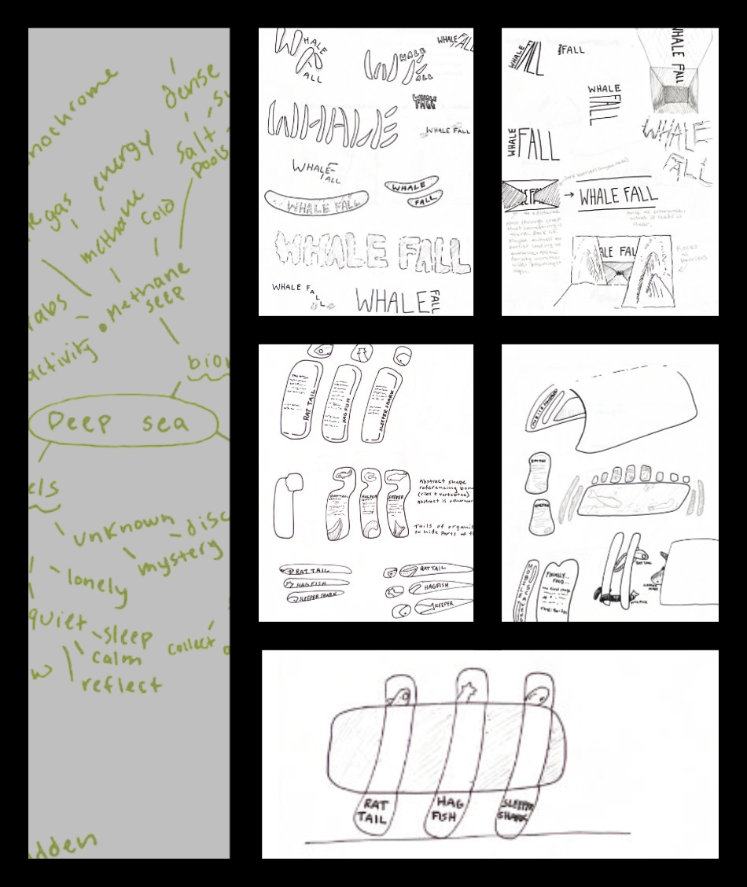
I selected a display font for each habitat and one unifying text typeface with high redability. I chose typefaces that are highly geometric, bold, and feature unique glyphs to tie them back to my concept of scientific discovery, exploration, and otherworldliness.
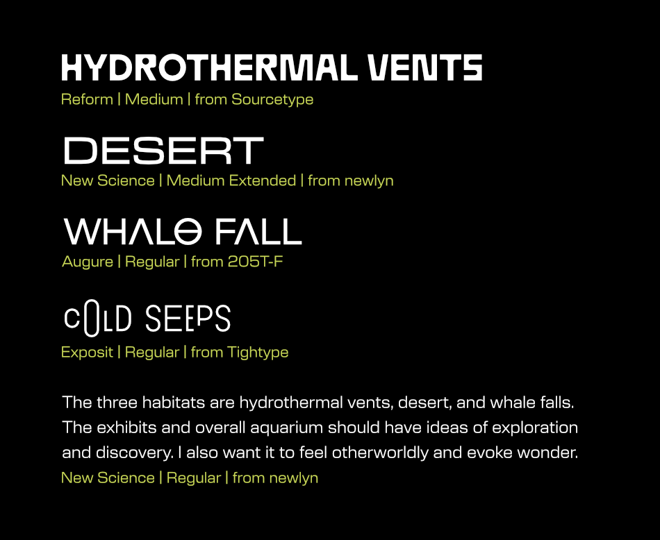
The first exhibit
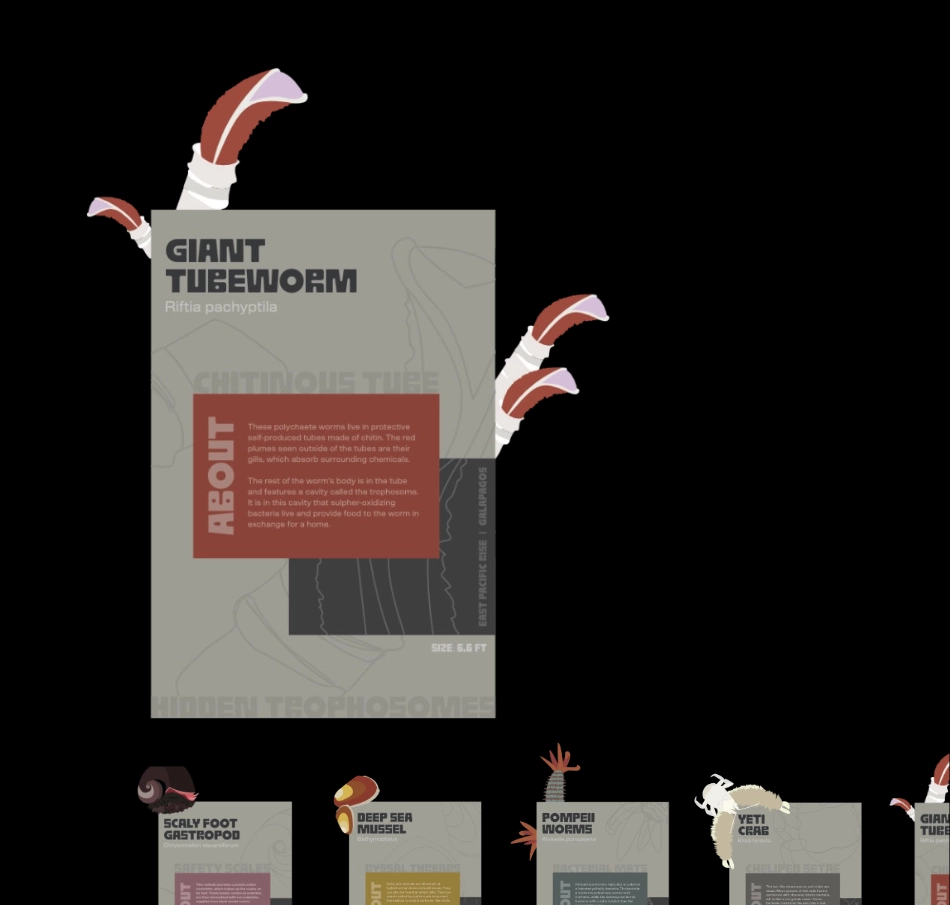
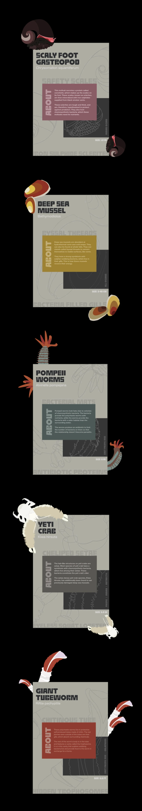
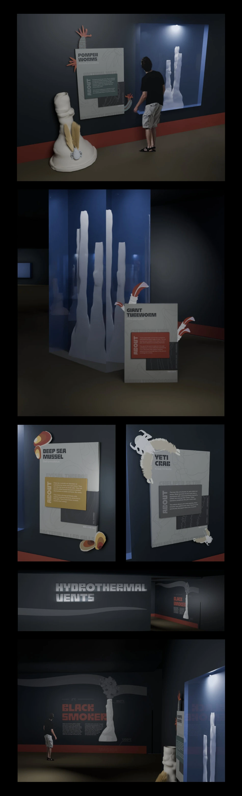
The second exhibit
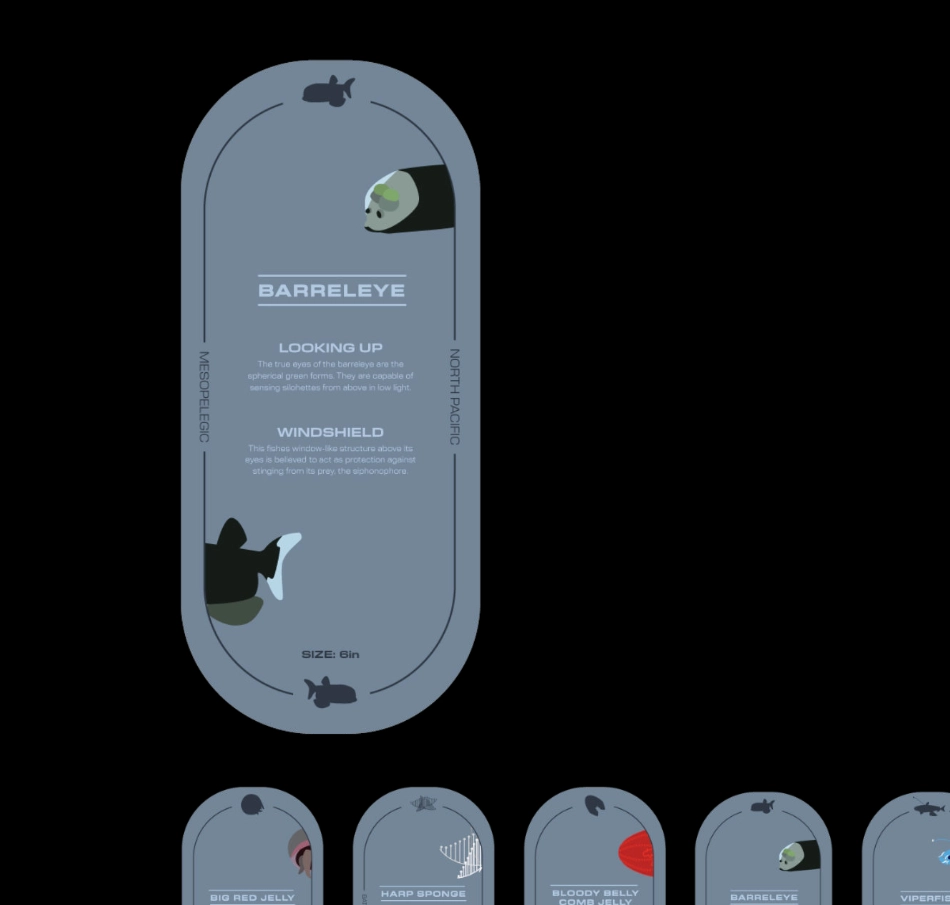
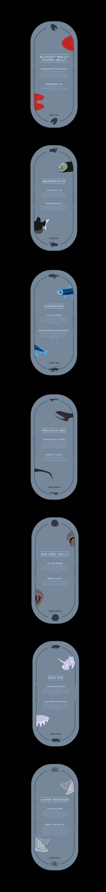
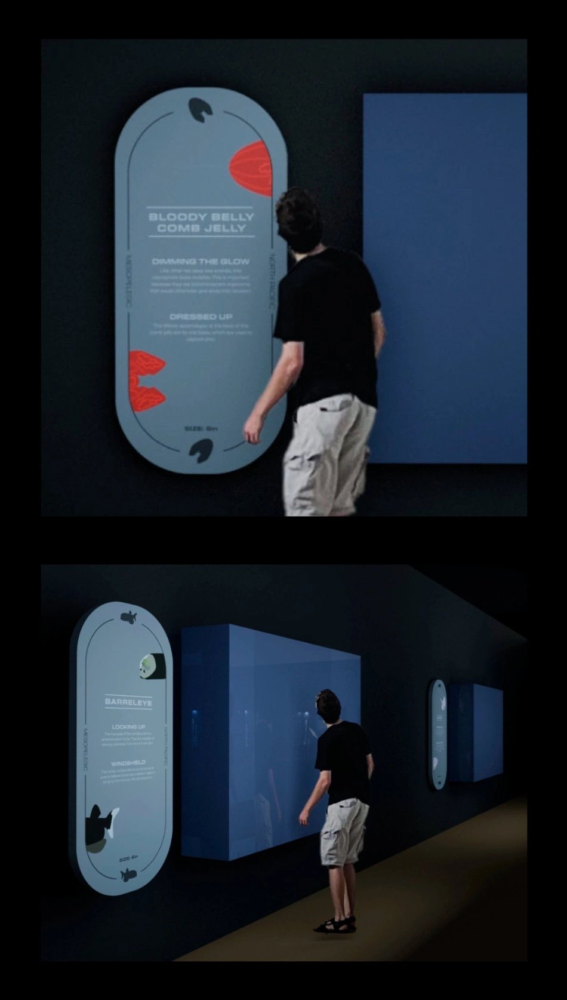
The third exhibit
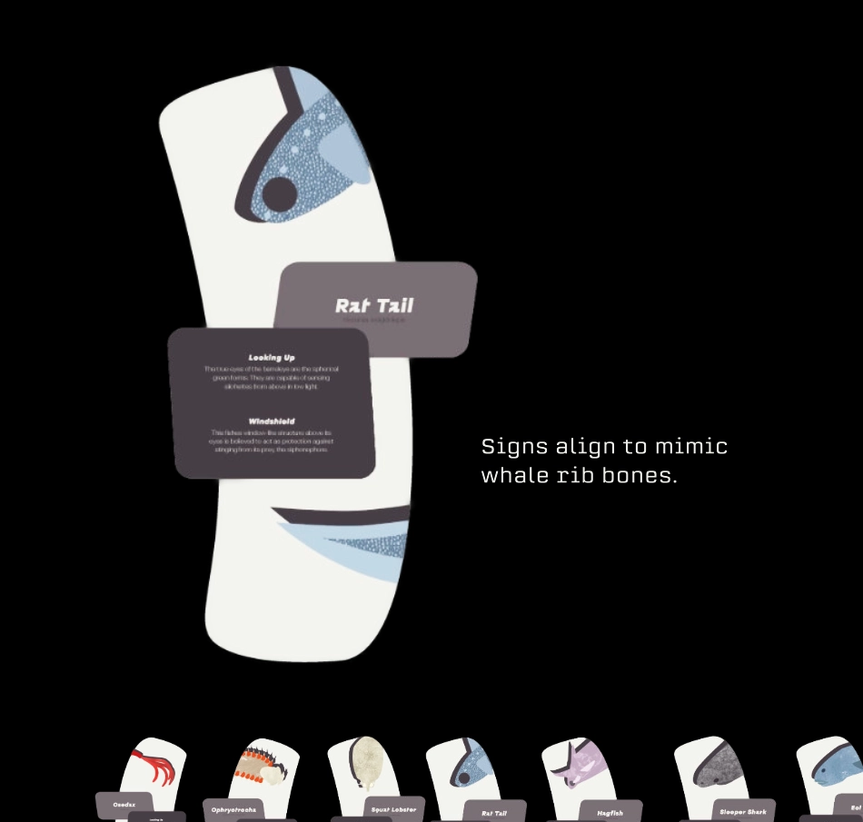
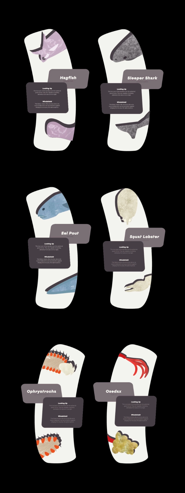
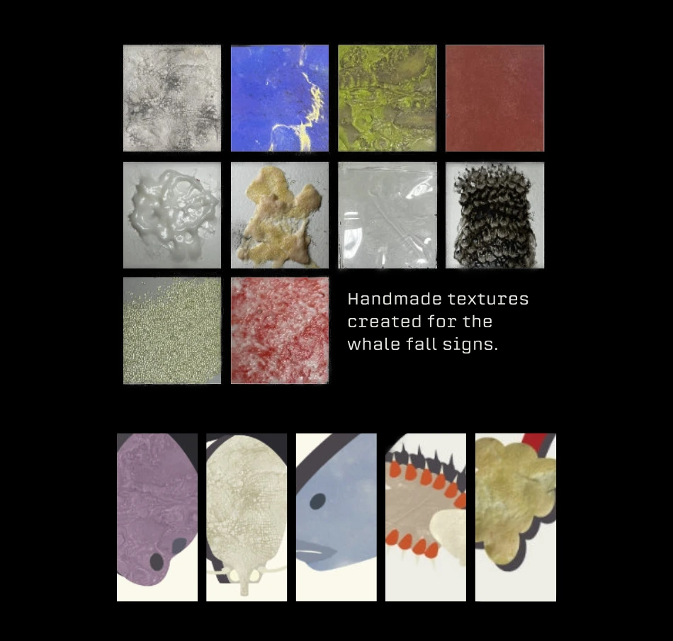
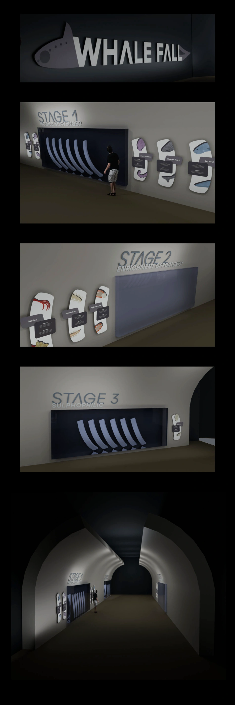
Additional wayfinding
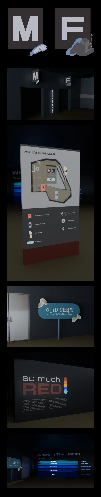